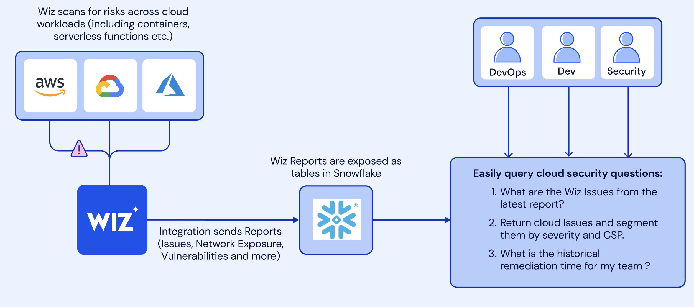

In this guide, you'll learn how to analyze Wiz data in Snowflake. The Snowflake and Wiz integration enables teams using Wiz to store Wiz Issues, Vulnerabilities, Host Configuration Findings, and other findings in Snowflake for historical analysis and other security analytics use cases such as:
- Incident response
- Custom security reports
- Analysis for business-critical security SLAs
Mutual Snowflake and Wiz customers usually use Wiz's native Snowflake integration to automatically ingest Wiz reports data into Snowflake. In this lab, we'll skip the part of creating the Snowflake integration in Wiz and start by creating the tables in Snowflake with synthetic Wiz data we generated for this lab.
Prerequisites
- Basic knowledge of SQL, and database concepts and objects
- Familiarity with Snowsight UI so that you can execute the SQL queries and build visualizations
What You'll Learn
- Load Wiz data into your Snowflake security data lake
- Query Wiz data in Snowflake
- Build visualizations on top of Wiz data in Snowflake
Architecture
 Wiz scans cloud workloads and generate Issues and security findings which then are being sent into Snowflake tables via the Wiz and Snowflake native integrtaion.
What You'll Build
- A worksheet containing useful queries for analyzing Wiz Issues and security findings data in Snowflake
- a Snowsight dashbaord that will be powered by these queries
At this point, log into your Snowflake account and have a clear screen to start working with. If you have just created a free trial account, feel free to minimize or close and hint boxes that are looking to help guide you. These will not be needed for this lab and most of the hints will be covered throughout the remainder of this exercise.
Let's go ahead and set the role we want to act as, which will be SECURITYADMIN to begin with. We can either set this either manually by hovering over the people icon and choosing SECURITYADMIN from the "Role" dropdown, or we can run the first line of code in our worksheet. In addition to traditional SQL statements, Snowflake Data Definition (DDL) commands, such as setting the worksheet context, can also be written and executed within the worksheet.
Let's execute the first SQL command in the SQL script.
USE ROLE SECURITYADMIN;
To execute this code, all we need to do is place our cursor on the line we wish to run and then either hit the "run" button at the top left of the worksheet or press Cmd/Ctrl + Enter/Return. Each step throughout the guide has an associated SQL command to perform the work we are looking to execute, and so feel free to step through each action running the code line by line as we walk through the lab. For the purposes of this demo, we will not be running multiple statements in a row.
To get started, we are going to create the Snowflake objects for this lab. You can create objects using the UI, but for the purposes of this lab we will use Snowflake DDL commands in the SQL script file that we downloaded in the previous step.
We already switched our "role" to SECURITYADMIN, a role typically used to create users and roles in the Snowflake account. We will now create our primary ROLE and USER that will be used by the Cloud Security Analyst persona. We will also grant the CLOUD_SECURITY_ANALYST role to the SYSADMIN role to make administration easier. Highlight and execute both commands.
CREATE OR REPLACE ROLE CLOUD_SECURITY_ANALYST_ROLE COMMENT='CLOUD SECURITY ANALYST ROLE';
GRANT ROLE CLOUD_SECURITY_ANALYST_ROLE TO ROLE SYSADMIN;
Next we will create the CLOUD_SECURITY_ANALYST user, and grant the CLOUD_SECURITY_ANALYST_ROLE role to this user. Please note the password that is set for the user, feel free to change the password to your preference, but do note this password as it will be used in future steps to configure the connections with Tableau CRM.
CREATE OR REPLACE USER CLOUD_SECURITY_ANALYST PASSWORD='SNOW1234'
DEFAULT_ROLE=CLOUD_SECURITY_ANALYST_ROLE
DEFAULT_WAREHOUSE=WIZ_LAB_WH
DEFAULT_NAMESPACE=WIZDB.PUBLIC
MUST_CHANGE_PASSWORD = FALSE
COMMENT='CLOUD SECURITY ANALYST USER';
GRANT ROLE CLOUD_SECURITY_ANALYST_ROLE TO USER CLOUD_SECURITY_ANALYST;
We will now switch to the SYSADMIN role to create the database and schema needed. Databases and Schemas are storage structures used in Snowflake to store and manage objects such as Tables, Views, Stages, Sequences, etc. We will also grant the CLOUD_SECURITY_ANALYST the necessary privileges on these structures.
USE ROLE SYSADMIN;
CREATE OR REPLACE DATABASE WIZDB;
CREATE OR REPLACE SCHEMA WIZDB.WIZSCHEMA;
GRANT USAGE ON DATABASE WIZDB TO ROLE CLOUD_SECURITY_ANALYST_ROLE;
GRANT ALL ON SCHEMA WIZDB.WIZSCHEMA TO ROLE CLOUD_SECURITY_ANALYST_ROLE;
Next we will create a Snowflake WAREHOUSE that will be used. In Snowflake a WAREHOUSE is a compute cluster that can be instantaneously start/stopped or scaled up/down as needed. WAREHOUSES only perform compute work, while all data is managed and stored in DATABASES, as Snowflake has complete separation between storage and compute to allow for fast and flexible independent scaling. We will also grant the CLOUD_SECURITY_ANALYST_ROLE usage privileges on the WAREHOUSE.
TIP: It is typically a good idea to create all warehouses with the AUTO_SUSPEND and AUTO_RESUME properties set to avoid using compute resources when not needed.
CREATE OR REPLACE WAREHOUSE WIZ_LAB_WH
WITH WAREHOUSE_SIZE = 'XSMALL'
AUTO_SUSPEND = 300
AUTO_RESUME = TRUE;
GRANT USAGE ON WAREHOUSE WIZ_LAB_WH TO ROLE CLOUD_SECURITY_ANALYST_ROLE;
The warehouse is now ready to use.
Mutual Snowflake and Wiz customers usually use Wiz's native Snowflake integration to automatically ingest Wiz reports data into Snowflake. In this lab, we'll skip the part of creating the Snowflake integration in Wiz and start by creating the tables in Snowflake with synthetic Wiz data we generated for this lab.
First we will set our context to the CLOUD_SECURITY_ANALYST_ROLE, and the WIZ_LAB_WH database and WIZSCHEMA schema.
USE ROLE CLOUD_SECURITY_ANALYST_ROLE;
USE WAREHOUSE WIZ_LAB_WH;
USE WIZDB.WIZSCHEMA;
Next, we will create the WIZISSUES, WIZVULNERABILITIES, and WIZ_HOST_CONFIGURATION_FINDINGS tables to load the data into Snowflake using the COPY command. We will use one of the predefined Snowflake file formats for CSV files to do this.
CREATE OR REPLACE TABLE WIZDB.WIZSCHEMA.WIZISSUES (
CREATED_AT VARCHAR(16777216),
TITLE VARCHAR(16777216),
SEVERITY VARCHAR(16777216),
STATUS VARCHAR(16777216),
RESOURCE_TYPE VARCHAR(16777216),
RESOURCE_EXTERNAL_ID VARCHAR(128),
SUBSCRIPTION_ID VARCHAR(16777216),
PROJECT_IDS VARCHAR(16777216),
PROJECT_NAMES VARCHAR(16777216),
RESOLVED_TIME VARCHAR(16777216),
RESOLUTION VARCHAR(16777216),
RESOURCE_REGION VARCHAR(16777216),
RESOURCE_STATUS VARCHAR(16777216),
RESOURCE_PLATFORM VARCHAR(16777216),
RESOURCE_OS VARCHAR(16777216),
ISSUE_ID VARCHAR(128),
DUE_AT VARCHAR(16777216),
SUBSCRIPTION_NAME VARCHAR(16777216),
RISKS VARCHAR(16777216),
REPORT_RUN_ID VARCHAR(16777216)
);
COPY INTO WIZDB.WIZSCHEMA.WIZISSUES
FROM s3://sfquickstarts/sfguide_security_analytics_with_wiz_and_snowflake/wizissues.tsv
FILE_FORMAT = (TYPE = 'CSV', SKIP_HEADER = 1,FIELD_DELIMITER='0x09');
CREATE OR REPLACE TABLE WIZDB.WIZSCHEMA.WIZVULNERABILITIES (
ID VARCHAR(128),
NAME VARCHAR(16777216),
CVSSSEVERITY VARCHAR(16777216),
HASEXPLOIT VARCHAR(16777216),
HASCISAKEVEXPLOIT VARCHAR(16777216),
FINDINGSTATUS VARCHAR(16777216),
VENDORSEVERITY VARCHAR(16777216),
FIRSTDETECTED VARCHAR(16777216),
LASTDETECTED VARCHAR(16777216),
RESOLVEDAT VARCHAR(16777216),
RESOLUTIONREASON VARCHAR(16777216),
REMEDIATION VARCHAR(16777216),
DETAILEDNAME VARCHAR(16777216),
VERSION VARCHAR(16777216),
FIXEDVERSION VARCHAR(16777216),
PROJECTS VARCHAR(16777216),
ASSETID VARCHAR(128),
ASSETREGION VARCHAR(16777216),
CLOUDPLATFORM VARCHAR(16777216),
STATUS VARCHAR(16777216),
SUBSCRIPTIONID VARCHAR(16777216),
OPERATINGSYSTEM VARCHAR(16777216),
REPORT_RUN_ID VARCHAR(16777216)
);
COPY INTO WIZDB.WIZSCHEMA.WIZVULNERABILITIES
FROM s3://sfquickstarts/sfguide_security_analytics_with_wiz_and_snowflake/wizvulnerabilities.tsv
FILE_FORMAT = (TYPE = 'CSV', SKIP_HEADER = 1,FIELD_DELIMITER='0x09');
CREATE OR REPLACE TABLE WIZDB.WIZSCHEMA.WIZ_HOST_CONFIGURATION_FINDINGS (
ID VARCHAR(16777216),
ANALYZEDAT VARCHAR(16777216),
RESOURCECLOUDPROVIDERID VARCHAR(128),
RESOURCETYPE VARCHAR(16777216),
RESOURCENATIVETYPE VARCHAR(16777216),
RESOURCEREGION VARCHAR(16777216),
RESULT VARCHAR(16777216),
RULENAME VARCHAR(16777216),
SEVERITY VARCHAR(16777216),
PROJECTNAMES VARCHAR(16777216),
CLOUDPROVIDER VARCHAR(16777216),
FIRSTSEEN VARCHAR(16777216),
UPDATEDAT VARCHAR(16777216),
SCOPEOBJECTTYPE VARCHAR(16777216),
SCOPEOBJECTPROVIDERID VARCHAR(16777216),
REPORT_RUN_ID VARCHAR(16777216)
);
COPY INTO WIZDB.WIZSCHEMA.WIZ_HOST_CONFIGURATION_FINDINGS
FROM s3://sfquickstarts/sfguide_security_analytics_with_wiz_and_snowflake/wizhostconfigurationfindings.tsv
FILE_FORMAT = (TYPE = 'CSV', SKIP_HEADER = 1,FIELD_DELIMITER='0x09');
Lastly, lets create the WIZ_REPORT_RUNS table and then load the data.
CREATE OR REPLACE TABLE WIZDB.WIZSCHEMA.WIZ_REPORT_RUNS (
REPORT_RUN_ID VARCHAR(16777216) NOT NULL,
REPORT_ID VARCHAR(16777216),
START_TIME TIMESTAMP_NTZ(9),
END_TIME TIMESTAMP_NTZ(9),
STATUS VARCHAR(16777216),
MESSAGE VARCHAR(16777216),
primary key (REPORT_RUN_ID)
);
COPY INTO WIZDB.WIZSCHEMA.WIZ_REPORT_RUNS
FROM s3://sfquickstarts/sfguide_security_analytics_with_wiz_and_snowflake/wizreportruns.tsv
FILE_FORMAT = (TYPE = 'CSV', SKIP_HEADER = 1,FIELD_DELIMITER='0x09');
In the upcoming steps, we'll query different Wiz data sources, but first, let's understand the Wiz data we'll be working with:
- Wiz Issues - a real risk in the cloud environment made of toxic combinations of different risks, misconfigurations, vulnerabilities, networks, identities and access, secrets, and more across accounts, users, workloads, APIs, and critical data. This is the data that highlights the significant risks to your environment.
- Vulnerabilities - information on resolved and unresolved vulnerabilities found in scanned environments.
- Host Configuration Findings - information about OS and app-level configuration risks.
Wiz reports are automatically pushed into Snowflake tables. We can use the wiz_report_runs table to monitor report execution and Wiz data ingestion into Snowflake. Let's first get a feel for how the data looks:
select * from WIZDB.WIZSCHEMA.WIZ_REPORT_RUNS limit 10;
Each row contains information about the report run start and end time, the report execution status, the report ID, and the specific run ID.
Now, let's see the existing status and message combinations:
select status,message
from WIZDB.WIZSCHEMA.wiz_report_runs
group by 1,2;
Identifying Critical Issues
Let's start by looking at specific Issue with the ID b500f7188a6c978319528f79b97859fd155eaa5a2513c0ed8b83cd54dc859034. Let's see how often this Issue appears across different report runs:
select report_run_id
from WIZDB.WIZSCHEMA.WIZISSUES
where issue_id = 'b500f7188a6c978319528f79b97859fd155eaa5a2513c0ed8b83cd54dc859034'
group by 1;
For seeing only the record from the last report we can use the ISSUES_LATEST view:
CREATE OR REPLACE view WIZDB.WIZSCHEMA.ISSUES_LATEST as
with latest_issue_report as (
select wrr.report_run_id as run_id
from WIZDB.WIZSCHEMA.wizissues ISSUES
join wiz_report_runs wrr on issues.report_run_id = wrr.report_run_id
order by wrr.start_time desc limit 1
)
select issues.* from WIZDB.wizschema.WIZISSUES ISSUES join latest_issue_report on issues.report_run_id = latest_issue_report.run_id;
Now if we look for issueID =‘b500f7188a6c978319528f79b97859fd155eaa5a2513c0ed8b83cd54dc859034' in the WIZDB.WIZSCHEMA.ISSUES_LATEST table, we can see the latest information on this Issue.
select *
from WIZDB.WIZSCHEMA.ISSUES_LATEST
where issue_id = 'b500f7188a6c978319528f79b97859fd155eaa5a2513c0ed8b83cd54dc859034';
Historical Analysis of Issues
While WIZDB.WIZSCHEMA.ISSUES_LATEST shows only the most recent Issues, you can create an ISSUES_HISTORICAL view to track Issues over time, including those that may not appear in recent reports.
-- the most recent version of all issues including those no longer being reported on post 30 days
CREATE OR REPLACE view WIZDB.WIZSCHEMA.ISSUES_HISTORICAL as
select * from
(
select issues.*,
row_number() over (partition by issues.issue_id order by wrr.start_time desc) as row_number
from
WIZDB.WIZSCHEMA.WIZISSUES issues
join wiz_report_runs wrr on issues.report_run_id = wrr.report_run_id
) where row_number = 1;
With this view, we can start answering questions about Issue trends over time. For example, let's see the number of Issues per day, broken down by severity:
--issues identified by day
select created_at::date as day,severity, count(*),
from wizdb.wizschema.issues_historical
group by day,severity
order by 3 desc ;
We can visualize the data to see trends more clearly - click on the Chart option in the results panel and create a line chart to better understand the issues trend.
Identifying High-Risk Platforms
Another interesting analysis is to understand which cloud platform and subscriptions historically hold most of the cloud security risk. To do that, we can count the number of critical Issues by the cloud platform using the following query:
--Issues found on the cloud platforms along with their severity
select
resource_platform,
severity,
count(issue_id)
from WIZDB.WIZSCHEMA.ISSUES_HISTORICAL
WHERE resource_platform IS NOT NULL AND resource_platform != ''
GROUP BY 1,2;
Visualizing this data helps identify platforms with the highest risk - click on the Chart option in the results panel and create a bar chart to see the cloud platform with the most Issues. We can see that AWS currently holds the most critical risks - let's add the subscription column to the query to identify the AWS subscription with the most Issues.
select
resource_platform,
subscription_name,
count(issue_id)
from WIZDB.WIZSCHEMA.ISSUES_HISTORICAL
WHERE resource_platform IS NOT NULL AND resource_platform != '' and resource_platform = 'AWS'
GROUP BY 1,2;
We can see that the Subscription-10 subscription has most of the critical Issues.
Most Common Issue Types
Knowing the most frequent issue types helps focus remediation efforts. Let's see the most common issue types across all Issues with Critical severity:
SELECT
TITLE,
COUNT(*) AS ISSUE_COUNT
FROM wizdb.wizschema.issues_historical
where severity = 'CRITICAL'
GROUP BY TITLE
ORDER BY ISSUE_COUNT DESC;
We can see that the most comon issue type is "VM/serverless with high/critical severity network vulnerabilities with a known exploit ".
select *
from WIZDB.WIZSCHEMA.WIZVULNERABILITIES
limit 100;
we can see in the table the information about resouce where the cve was found, the cve severity, status and when the vulnerability was first and last detected on the resouce and remediation steps as well. Similar the what we did with the Issues tables, let's also create an historical view for the vulnerabilities data.
CREATE OR REPLACE view WIZDB.WIZSCHEMA.VULNERABILITIES_HISTORICAL as
select * from
(
select vulns.*,
row_number() over (partition by vulns.id order by wrr.start_time desc) as row_number
from
WIZDB.WIZSCHEMA.WIZVULNERABILITIES vulns
join WIZDB.WIZSCHEMA.wiz_report_runs wrr on vulns.report_run_id = wrr.report_run_id
) where row_number = 1;
Now, let's slice and dice the data to get some insights on our vulnerabilities data. When dealing with vulnerabilities, it's crucial to understand their SLA and the time it took to resolve them. This can help prioritize and track the effectiveness of remediation efforts.
select
oldest_vuln_age,
count(*)
from (
select
assetid,
id,
max(datediff('day', firstdetected, lastdetected)) as oldest_vuln_age
from WIZDB.WIZSCHEMA.VULNERABILITIES_HISTORICAL
group by assetid,id,cvssseverity
order by oldest_vuln_age desc
) group by oldest_vuln_age
order by 1 asc;
As you can see, this query first identifies the oldest unresolved vulnerability for each asset by calculating the difference in days between when the vulnerability was first and last detected. It then counts how many assets have vulnerabilities of each age. Let's create a bar chart out of it which will better help understand the data distribution. click on the Chart option in the results panel and create a bar chart and change the orientation to vertical.
To better understand which assets are most affected, we can look at the detailed breakdown of the oldest unresolved vulnerabilities for each asset and its associated Wiz project which usually maps to a team in the organization. The following query provides shows the assests with the oldest Vulnerabilities age:
SELECT
assetid,name,projects,
MAX(DATEDIFF('day', firstdetected, lastdetected)) AS oldest_vuln_age
FROM WIZDB.WIZSCHEMA.VULNERABILITIES_HISTORICAL
GROUP BY assetid,projects,name
ORDER BY oldest_vuln_age DESC;
Let's use the same queries we created in the last sections in order to create a dashboard where we can track Wiz Issues, vulnerabilities, and Host Configuration Findings. First, let's go to the Dashboards page in Snowflake and create a new dashboard. Then let's hit the "+" button and create a "New Tile" and select "From SQL Worksheet". Let's place the query we used before for identifying the cloud platform with the most Issues:
select
resource_platform,
count(issue_id)
from WIZDB.WIZSCHEMA.issues_historical
WHERE resource_platform IS NOT NULL AND resource_platform != '' and severity = 'CRITICAL'
GROUP BY 1;
Now, let's select the Heatgrid as the Chart type. We can repeat the same process for other queries we executed against the Issues, Vulnerabilities and Host Configuration Findings tables and create a dashbaord such as the following: 
Once you have completed the lab, it is important to clean up the resources you have created to avoid incurring unnecessary costs and to keep your environment tidy. Follow these steps to teardown the lab:
Switch to SYSADMIN Role
USE ROLE SYSADMIN;
This command sets your current role to SYSADMIN, which has the necessary permissions to manage databases, schemas, and warehouses.
Drop Tables
DROP TABLE IF EXISTS WIZDB.WIZSCHEMA.WIZISSUES;
DROP TABLE IF EXISTS WIZDB.WIZSCHEMA.WIZVULNERABILITIES;
DROP TABLE IF EXISTS WIZDB.WIZSCHEMA.hostconfiguration;
These commands delete the tables WIZISSUES, WIZVULNERABILITIES, and WIZ_HOST_CONFIGURATION_FINDINGS from the WIZSCHEMA schema in the WIZDB database.
Drop Warehouse
DROP WAREHOUSE IF EXISTS WIZ_LAB_WH;
This command deletes the WIZ_LAB_WH warehouse
Drop Schema
DROP SCHEMA IF EXISTS WIZDB.WIZSCHEMA;
This command deletes the WIZSCHEMA schema from the WIZDB database
Drop Database
DROP DATABASE IF EXISTS WIZDB;
This command deletes the WIZDB database.
Switch to SECURITYADMIN Role
USE ROLE SECURITYADMIN;
This command deletes the WIZDB database.
Drop User
DROP USER IF EXISTS CLOUD_SECURITY_ANALYST;
This command deletes the CLOUD_SECURITY_ANALYST user account.
Drop Role
DROP ROLE IF EXISTS CLOUD_SECURITY_ANALYST_ROLE;
This command deletes the CLOUD_SECURITY_ANALYST_ROLE role.
In this lab, we explored how to integrate and analyze Wiz data in Snowflake. We set up the environment, imported Wiz data, executed queries and build a dashboard to gain insights on Wiz data.